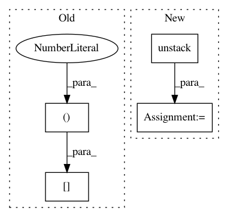

8a0267c11999e3165de11ffd27b3bb5a95d58668,keras_retinanet/layers/_misc.py,ClipBoxes,call,#ClipBoxes#Any#,169
Before Change
x1 = backend.clip_by_value(boxes[:, :, 0], 0, width)
y1 = backend.clip_by_value(boxes[:, :, 1], 0, height)
x2 = backend.clip_by_value(boxes[:, :, 2], 0, width)
y2 = backend.clip_by_value(boxes[:, :, 3], 0, height)
return keras.backend.stack([x1, y1, x2, y2], axis=2)
After Change
image, boxes = inputs
shape = keras.backend.cast(keras.backend.shape(image), keras.backend.floatx())
if keras.backend.image_data_format() == "channels_first":
_, _, height, width = backend.unstack(shape, axis=0)
else:
_, height, width, _ = backend.unstack(shape, axis=0)
x1, y1, x2, y2 = backend.unstack(boxes, axis=-1)
In pattern: SUPERPATTERN
Frequency: 3
Non-data size: 4
Instances
Project Name: fizyr/keras-retinanet
Commit Name: 8a0267c11999e3165de11ffd27b3bb5a95d58668
Time: 2019-09-26
Author: simone.merello@perceptolab.com
File Name: keras_retinanet/layers/_misc.py
Class Name: ClipBoxes
Method Name: call
Project Name: soft-matter/trackpy
Commit Name: f303fa1ac5ae83a4093a07478fb5bfdb43ab9821
Time: 2012-12-11
Author: daniel.b.allan@gmail.com
File Name: mr/plots.py
Class Name:
Method Name: plot_traj
Project Name: liyaguang/DCRNN
Commit Name: e08002d72d3330940ae10beca3b1f7f9e66767ea
Time: 2018-06-06
Author: liyaguang0123@gmail.com
File Name: model/dcrnn_model.py
Class Name: DCRNNModel
Method Name: __init__